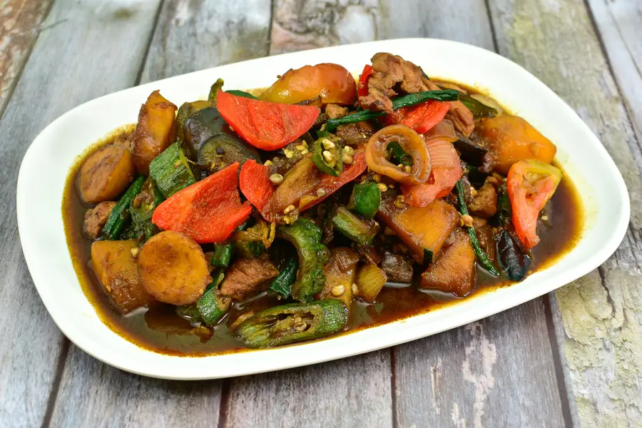
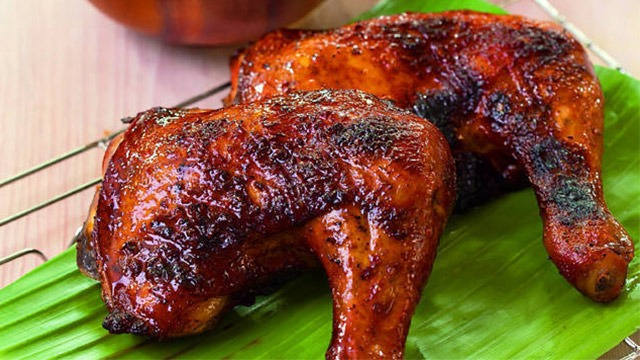
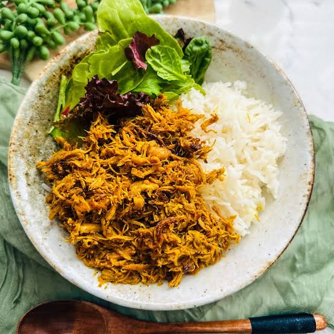
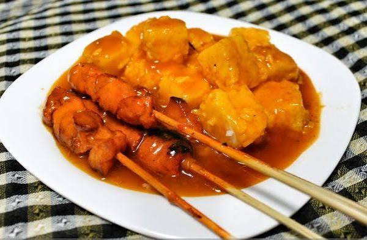

TOURIST DESTINATION
| HOME | PLACES | FOOD |
|---|
LUZON
|
 Pakbet (with Pork) Description: This is a classic Filipino vegetable stew cooked in rich, savory shrimp paste (bagoong) sauce. |
.jpg) Pork Sisig Description: An iconic sizzling Filipino dish made from chopped, crispy pork parts (usually ears, face, and belly), sautéed with onions, garlic, and chili peppers. |
 Pork Binagoongan Description: This hearty Filipino dish features tender pork cubes braised until flavorful and tender in a rich, savory shrimp paste (bagoong) sauce. |
VISAYAS
|
 Chicken Inasal A grilled chicken dish from Bacolod City, Negros Occidental, marinated with vinegar, calamansi, garlic, and annatto oil. |
.jpg) batchoy A savory noodle soup from Iloilo City made with pork, beef, noodles, and topped with crushed chicharon and garlic. |
.jpg) cebu lechon Cebu Lechon A famous roasted pig from Cebu, known for its crispy skin and flavorful meat seasoned with herbs and spices. |
MINDANAO
|
 pastil A popular dish from Maguindanao, made of steamed rice topped with shredded chicken wrapped in banana leaves. It is affordable and filling. |
 satti A grilled meat skewer from Zamboanga City, served with a spicy, flavorful sauce and rice. It is a favorite breakfast dish. |
 Curacha with Alavar Sauce A seafood specialty from Zamboanga, featuring a spanner crab cooked with Alavar's rich coconut and seafood sauce. |